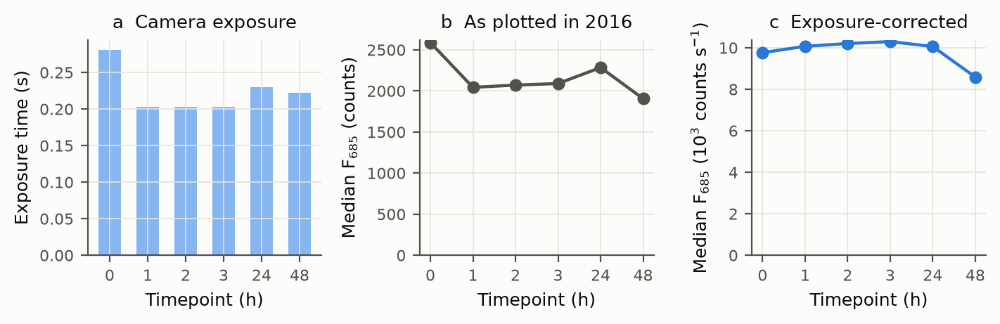
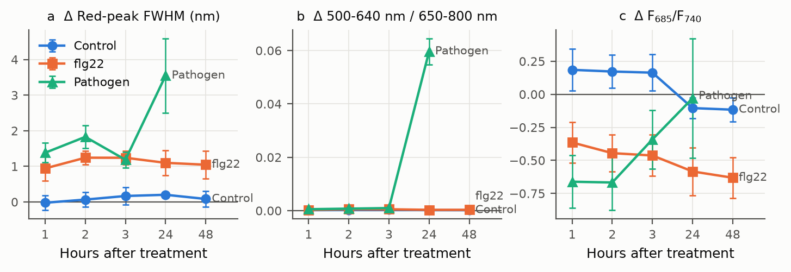
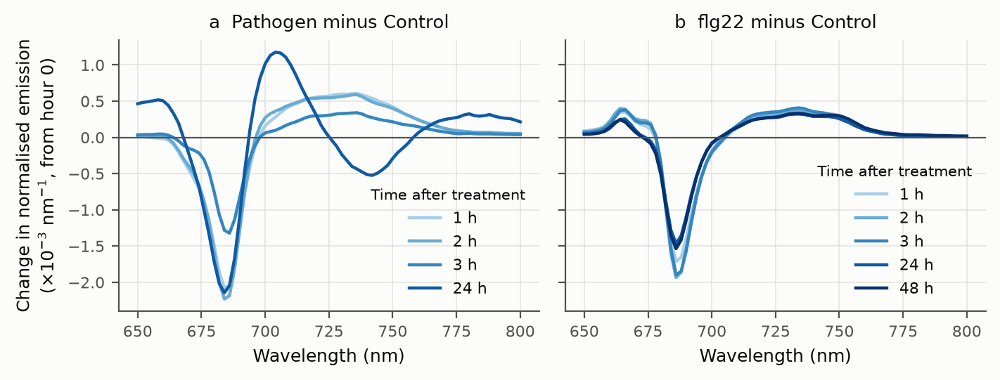
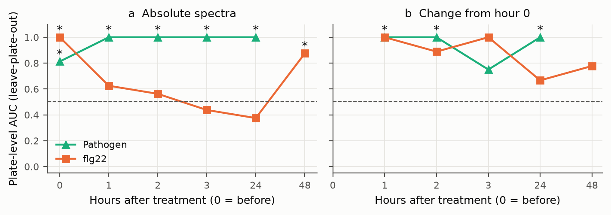
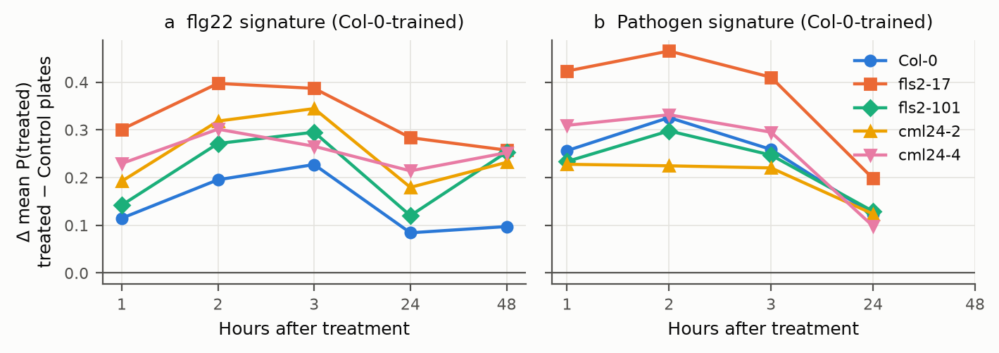

Can fluorescence hyperspectral imaging see a seedling respond to bacteria?
In 2016 we imaged Arabidopsis seedlings by fluorescence hyperspectral imaging before and after treatment with a mock solution, the flagellin epitope flg22 or Pseudomonas syringae. Five genotypes were imaged: Col-0, two fls2 flagellin-receptor mutants and two cml24 Ca2+-sensor mutants. Our reanalysis finds a pathogen signature from 1 hour after inoculation. It also finds that the flg22 signal in this experiment does not depend on FLS2, so it is not perception.
1 h
Earliest pathogen effect: red emission peak {{pathFwhmOnenm}} nm broader than in Control plates, relative to each plate's own baseline (q = {{pathFwhmOneq}}). It persists to 24 h, joined by more emission below 640 nm from 2 h.
AUC {{aucPathTwo}}
Leave-plate-out classification of infected vs Control plates from change-from-baseline spectra at 1, 2 and 24 h (exact permutation p = {{pPathTwo}}).
{{rawDropPct}}% → {{cpsDiffPct}}%
The 2016 summaries' intensity drop after treatment shrinks to within {{cpsDiffPct}}% once each cube is divided by its exposure time.
AUC {{aucPlaceboFlg}} at hour 0
Plates were separable before treatment, so only change from baseline is evidence. The flg22 signal is as strong in fls2 as in Col-0.
The experiment
Seedlings on square agar plates were imaged in the Gilroy Lab (UW-Madison Botany) with a MacroPhor fluorescence hyperspectral line-scan imager (Middleton Spectral Vision), using 488 nm excitation and recording 324 bands from 400 to 809 nm. Each plate held five genotype lanes and was imaged as three row-scans. Four plates per treatment were imaged before treatment and at 1, 2, 3, 24 and 48 h. An independent November 2016 replicate used 405 nm excitation with Col-0 and both fls2 lines. Facts still to be confirmed (pathovar/strain, flg22 concentration, seedling age) are listed openly in FACTS_PENDING.md.
The decisive control is genetic. An flg22 signature that reflects perception must disappear in fls2 mutants, which lack the flagellin receptor. The pathogen is still perceived through other bacterial patterns, so its signature need not.
What we had to fix first
| Problem | What we did |
|---|---|
| Exposure time changed between timepoints (0.305 s at hour 0, 0.203 s at 1–3 h, 0.22–0.27 s later). | Divided every intensity by its own exposure, and based the primary analysis on exposure-independent spectral shape. |
| Hour-0 scans saturated the 12-bit detector (up to {{satHzeroMaxPct}}% of a cube's seedling pixels). | Excluded saturated pixels. |
| Plates differed before treatment (classifier AUC {{aucPlaceboFlg}} at hour 0). | Analysed only change from each plate's own hour-0 baseline, with the plate as the experimental unit. |
| {{nOffsetRoi}} hand-drawn spectra, all on Pathogen plates, were exported without dark subtraction (a flat ~{{offsetMedian}}-count offset that mimics broad autofluorescence). | Subtracted each spectrum's own mean below the 488 nm excitation line (420–470 nm), where nothing can fluoresce. |
| Hour-0 plates were scanned "inverted", apart from a few later rescans. | Excluded the two plates with mixed hour-0 scans from baseline analyses. |
| Plates were not always placed in the same orientation. | Found each plate's genotype-lane direction from the 2016 hand-drawn ROIs. |
| November hand ROIs cover one plate per treatment. | Treated set-B treatment effects as not estimable from ROIs; plate-replicated analysis comes from the raw cubes. |

Results
An early pathogen signature


Classification, and why baseline matters

The flg22 signal is not FLS2-dependent

Still to come from the raw cubes, and marked as pending in the manuscript: Pathogen at 48 h (no hand ROIs were drawn), the plate-replicated November analysis, exposure-corrected intensities and pixel-level curve resolution.
Spectrum explorer
Means of the 2016 hand-drawn ROI spectra (set A), each area-normalised over 650–800 nm so exposure
and seedling size cancel. "Change from hour 0" subtracts the same treatment group's hour-0 mean. Data:
spectra.json (from results/roi_features.csv.gz).
Code & data
- Repository: github.com/dr-richard-barker/PathoFluor-At: numbered scripts
00–09, manifests with SHA-256 for every file, the 2016 hand-ROI spectra, derived tables and figures, and the LaTeX manuscript and slides. - Raw cubes: lossless, checksum-verified archives on Zenodo. DOIs pending.
- Every number on this page is generated from the committed tables by
scripts/07_numbers.py.